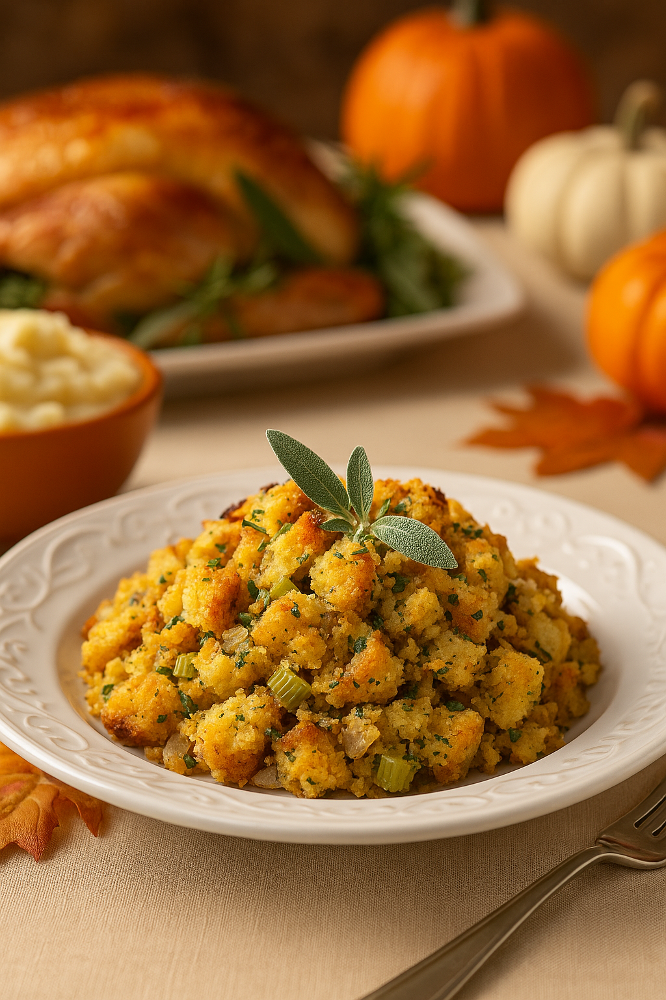

Vegetarian Cornbread Stuffing
Ingredients
Cornbread Base
- 1 cup all-purpose flour
- 1 cup yellow cornmeal
- ⅔ cup white sugar
- 3 ½ teaspoons baking powder
- 1 teaspoon salt
- 1 cup milk
- ⅓ cup vegetable oil
- 1 large egg
Stuffing
- 1 pan prepared cornbread (9-inch round), cooled and cut into 1-inch cubes
- 2 tablespoons butter (or olive oil for vegan)
- 1 large onion, diced
- 3 ribs celery, diced
- 3–4 cloves garlic, minced
- 1 teaspoon dried sage
- 1 teaspoon dried thyme
- 1 teaspoon dried parsley
- ½ teaspoon freshly ground black pepper
- ½–1 teaspoon salt, to taste
- 1½–2 cups vegetable broth, added as needed
- 2 large eggs, lightly beaten (omit for vegan; see Notes)
- Optional add-ins: 1 cup sautéed mushrooms, ½ cup toasted pecans, ½ cup dried cranberries, or 1 cup roasted butternut squash cubes
Directions
- Make the cornbread: Preheat your oven to 400°F (200°C). Lightly grease a 9-inch round cake pan or cast-iron skillet with butter or oil.
- In a large bowl, whisk together the flour, cornmeal, sugar, baking powder, and salt until evenly combined.
- Create a small well in the center of the dry ingredients. Pour in the milk, vegetable oil, and egg. Whisk gently until just combined; a few small lumps are okay.
- Pour the batter into the prepared pan and bake for 20–25 minutes, or until the top is golden brown and a toothpick inserted in the center comes out clean. Let the cornbread cool in the pan for about 10 minutes, then remove and cool completely.
- Dry the cornbread: Once cooled, cut the cornbread into 1-inch cubes. Spread the cubes on a baking sheet and bake at 300°F (150°C) for 15–20 minutes, stirring once, until the edges feel dry but not hard. Let cool. (This step can be done a day ahead.)
- Prep the oven for stuffing: Preheat the oven to 350°F (175°C). Grease a 9×13-inch baking dish.
- Sauté the vegetables: In a large skillet over medium heat, melt the butter. Add the diced onion and celery and cook, stirring occasionally, until softened and translucent, 8–10 minutes.
- Add the minced garlic, sage, thyme, parsley, black pepper, and ½ teaspoon salt. Cook for 1–2 minutes more, until fragrant. Remove from the heat.
- Combine the stuffing: Place the dried cornbread cubes in a large mixing bowl. Add the sautéed vegetables and any optional add-ins (mushrooms, pecans, cranberries, squash). Toss gently to combine.
- Drizzle 1½ cups of vegetable broth evenly over the mixture, tossing gently so the cornbread absorbs the liquid without turning mushy. Add more broth a little at a time if the mixture still feels dry. Taste and adjust seasoning with extra salt or pepper as needed.
- Whisk the eggs in a small bowl, then pour over the cornbread mixture and gently fold to combine, trying not to break up the cubes too much.
- Bake: Transfer the mixture to the prepared baking dish, spreading it into an even layer. Cover tightly with foil and bake for 25 minutes.
- Remove the foil and continue baking for 10–15 minutes, or until the top is lightly golden and the stuffing is set in the center.
- Let the stuffing rest for 5–10 minutes before serving so it can firm up slightly and slice or scoop more cleanly.
Nutrition
Serving Size: 1 of 8 servings
Calories: ~340
Fat: ~14 g
Carbs: ~44 g
Protein: ~7 g
Approximate values based on standard ingredients and 8 servings.
Notes
- Vegan option: Use olive oil instead of butter and replace the eggs with 2–3 tablespoons ground flaxseed mixed with 6 tablespoons water (let sit 5–10 minutes to thicken).
- Make ahead: Cornbread can be baked and cooled up to 2 days in advance, then cubed and dried. You can assemble the stuffing up to the point before baking, cover, and refrigerate for up to 1 day. Add a splash of extra broth before baking if it looks dry.
- Texture control: Add broth gradually. The cornbread should be moist and just starting to clump together, not soggy. If it looks overly wet, bake uncovered a bit longer to dry the top.
- Flavor variations: Try adding finely chopped fresh sage, rosemary, or thyme, or folding in roasted vegetables like butternut squash or Brussels sprouts for extra flavor and color.